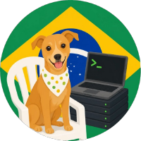

Em breve
PobreLab
Em breve teremos novidades da comunidade.
$status --community pobrelab
Preparando o servidor, o café e os próximos conteúdos. Voltamos em breve!

Em breve teremos novidades da comunidade.
Homelab de pobre, engenharia de rico. 🇧🇷🐕
O PobreLab junta gente que curte homelab mas não tem dinheiro pra rack, servidor enterprise e switch gerenciável. Aqui o datacenter fica em cima da cadeira de plástico. O servidor principal é aquele notebook com a tela quebrada que roda 24/7.
O objetivo é mostrar que dá pra aprender e brincar com infraestrutura de verdade gastando pouco. Também é para ajudar quem já tem um setup a melhorar o que tem, sem precisar trocar tudo.
Quer criar um repositório dentro da organização? Abra uma issue no GitHub do PobreLab contando a ideia que a gente conversa.